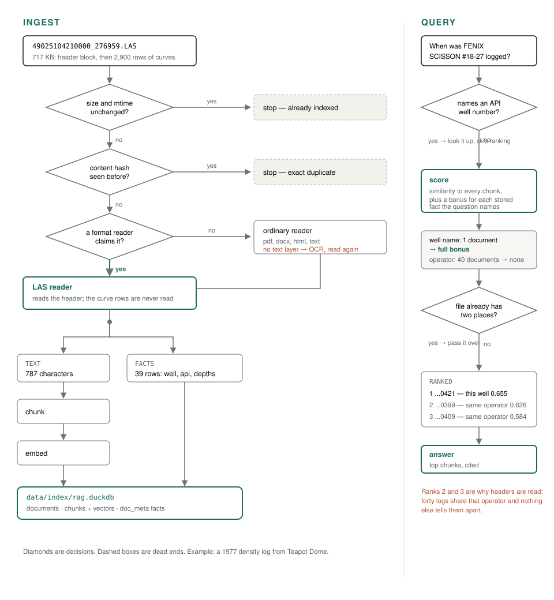

Point a normal RAG pipeline at an E&P data room and most of it
disappears. A SEG-Y volume is application/octet-stream; a shapefile is five
files that only mean something together; a LAS log is 40 lines of header attached to a
megabyte of floating point. The parts a geologist would search for are there, but nothing
in a general-purpose text pipeline goes and gets them.
This project does two things. It keeps the pipeline deliberately small — walk a folder, read what can be read, chunk it, embed it, answer with citations, one DuckDB file holding all of it, two cheap models fixed in config. And it treats E&P formats as first-class citizens, with a reader per format that pulls out the part a person would search for and leaves the numbers alone.
Everything below is measured against the corpus in the repository. Where something didn't work, the number that says so is on this page.
The finding
One result shaped the whole system:
Embeddings cannot locate identifiers, quantities, or group membership. Not "do it badly" — they have no mechanism for it. The fix is exact lookup, not a better model, not a bigger model, and not more clever chunking.
The question "well 4902511080" scores 0.324 against the log that actually carries that number, and 0.729 against a page of unrelated digits. A vector space that puts digits near digits is working exactly as designed; it just cannot tell you which well. Looked up instead of ranked, recall@1 on those questions goes from 36% to 92%.
The same holds for a seismic line name, a derived quantity like trace length, and membership in a group like a coordinate system. Each got a lookup, and each one is measured below.

The readers
| format | what is indexed | what is not |
|---|---|---|
| LAS well logs | the header as a sentence, plus one fact per curve, depth range, well, field, operator | the log curves themselves |
| SEG-Y seismic | the EBCDIC textual header, decoded, plus sample rate and trace geometry | the traces |
| SEG-P1 positioning | header labels, line names, shotpoint range, point count | the coordinates |
| ESRI shapefile | title and abstract from .shp.xml, CRS from .prj, extent from .shp, and the .dbf attributes worth searching | the geometry |
The division is the same every time: text a person would search for goes to the embedder, numbers a person would filter on become facts in a metadata table. Sending a sample interval to an embedding model is how you lose it.
Seismic, measured
Without a reader, libmagic cannot name a SEG-Y file, so it is dropped with a reason and nothing inside it is searchable. With one, the same 54 files yield 119 passages and 741 facts, every stored number checked against the range its field allows.
Ground truth comes from the headers themselves: a file whose card reads
CLIENT: LITHOPROBE belongs in the answer set for a question about Lithoprobe. A
seismic archive is many files per survey, so these questions have several right answers and
are scored against the set — not against one blessed document.
Four kinds of question, ranked against looked up:
| question type | n | top hit, ranked | top hit, looked up |
|---|---|---|---|
| seismic line name | 8 | 0% | 100% |
| trace length | 11 | 0% | 100% |
| sample interval | 8 | 38% | 100% |
| samples per trace | 12 | 75% | 100% |
| whole set | 48 | — | 98% top hit, 99% recall@10 |
The zeroes are the interesting rows. Trace length is derived — sample interval times sample count — so the number appears nowhere in the file and nothing in the index resembles the question. Ranking has nothing to grip. A lookup answers it exactly. The unit has to appear in the question too, so "18000 barrels" is never read as a trace length.
Sample counts are the weakest case for a lookup and still worth it: 2000 is
real text in the header, so ranking already found the right files most of the time — and put
the wrong one first a quarter of the time.
A sample interval is stored twice, in microseconds and milliseconds, so a question in either unit matches whichever way the file was written.
Well numbers have no canonical length
Vendors write fourteen digits. State agencies write ten. A map layer sometimes writes seven, with the state code left off entirely. Each is what that system holds, and picking one as "correct" throws away the sidetrack and completion codes the longer forms carry.
So no length is imposed. Separators are stripped, the digits are kept as written, and two
numbers name the same well when one runs on from the other — sharing a start, where both
begin at the state, or an end, where one has dropped it. A fragment can be starred like a
glob, in a question or in --where:
| pattern | matches |
|---|---|
*2506325 | ends with |
2506325* | starts with |
*2506325* | holds it anywhere |
The last one matters more than it looks. A fourteen-digit number carries a sidetrack
after the well, so a fragment lifted out of a map layer lands in the middle of it:
2506325 ends 2506325 and sits inside 490250632500. Only
the double star reaches both.
A label, not a shape
API numbers are detected in any document — a completion report, a loader log, a scanned permit — and validated against this project's own table of state and county codes. But structure alone is not enough. Measured on 992 documents that have nothing to do with wells:
In prose, a label is required. In a .dbf column it is not, and that asymmetry
is the point: a column is evidence, a sentence isn't. If most of a column
validates against the code table, it is a column of well numbers whatever it happens to be
called. In this corpus GeoGraphix layers keep them under DataId and
WellID; across every other numeric column — TypeId,
ObjectID, ParentCode, ASR_ID — not one value validates.
That found 6,908 well numbers across four layers, none of them searchable
before.
Shapefiles: classify the columns by measurement
.dbf attributes are sorted by what their values do, never by what
they are named, because field names are a vendor's abbreviations and there is no list to check
them against:
- values that repeat → a category, and becomes a filterable fact
- values nearly all distinct → names individual things, and goes into the text
- 90% one value → describes the layer, not the row
- bare digits → dropped, because retrieval is text and a number that names nothing cannot be searched for
Group membership is filtered, not ranked
A projection, a state and a county each name a set of documents rather than describing one, and the rarity boost cannot deliver them: 21 layers out of 2,520 documents earn about 0.06, which will not lift anything past 68,000 chunks. An exact match narrows the candidates instead.
| 19 questions naming a projection, datum, state or county | top hit right | recall@10 |
|---|---|---|
| ranked | 16% | 21% |
| filtered | 47% | 44% |
Read that as filtering is how these get answered at all, not as a score. Ground truth here is the documents carrying the value, which is close to what the filter selects, so the filtered arm is partly measuring itself. The ranked arm is the honest half: without a filter, these questions mostly go unanswered. What shows the filter costs nothing is that every other set on this page is unchanged by it.
Whether silence is a contradiction is read from the index
The obvious way to filter — drop every document that doesn't carry the key — deleted every
road and benchmark layer for any question naming a state, and cost the shapefile set seven
points. Only a document with a parsed well number carries api_state; a roads
layer saying nothing about a state is not claiming to be outside it.
So the rule is asked of the data rather than written down. For each key, the index says which kinds of document carry it nearly always:
| key | coverage | so a document that is silent… |
|---|---|---|
api_state | 96% of LAS files | …is a log with no API number — rare, and treated as a mismatch. A log that says WY is out when the question says TX. |
crs_name | 66% of shapefiles | …is one of the third with no usable .prj — kept, because it never raised the subject. |
My own assumption going in was that every shapefile has a .prj. A third of
them don't. No list of keys is maintained for this, so a new reader that always records
something gets the same treatment with no edit.
A state and a county, read back out of the digits
The numbering puts two digits of state and three of county at the front of every API number, so a stored well number already says where it is. Until that's read out, nobody can search for it by name — "what LAS files are in TX" previously matched nothing at all and returned Wyoming logs.
Only 12- and 14-digit values are trusted for it. Ten is excluded because
the last ten digits of 490250632500 are 0250632500, which parses as
state 02, county 506 — a real-looking Arizona well that does not exist. Shorter values are
fragments whose digits don't line up at all: Teapot_Wells writes
2500153, which is county 025 and well 00153 with the state gone. A wrong county
is worse than no county. Across the corpus this reads WY/Natrona off
the two layers storing twelve digits, and correctly nothing off the two storing seven.
A two-letter code is only recognised in capitals, because half of them are ordinary words
— IN, OR, ME, OK, HI,
DE, LA. "Wells in or near the field" would otherwise ask
for Indiana and Oregon.
Retrieval, overall
Cosine similarity, with three corrections that matter for a collection like this one: an
identifier in the question is looked up rather than ranked; metadata the question names lifts
the documents carrying it, weighted by rarity, so a well name held by one document outweighs
state=WYOMING held by 1,375; and no single document may take more than its share
of the answer — a map layer of 2,111 wells is 500 chunks that read alike, and without that cap
it held every place in the top ten for any question about wells.
| format | n | recall@1 | recall@5 | MRR |
|---|---|---|---|---|
| LAS | 28 | 82% | 93% | 0.851 |
| 22 | 50% | 77% | 0.636 | |
| plain text | 22 | 50% | 59% | 0.545 |
| HTML | 18 | 44% | 72% | 0.569 |
| shapefile | 10 | 60% | 90% | 0.703 |
| all | 103 | 58% | 77% | 0.663 |
Read recall@5 first — top_k is 6, so that is what the model actually sees. The
LAS row is what a format reader buys you. The plain-text and HTML rows are ordinary documents
with no reader and no metadata, and they are the honest floor this sits on.
Sample size is why this set exists at all. At 22 questions the 95% interval on a recall figure is about ±16 points, so any change worth less than that was indistinguishable from luck. At 103 it is about ±8 — still wide enough to be careful with, and stated here rather than hidden.
Two things built, measured, and switched off
Both are in the repository, both are wired up, and both default to off with the numbers written next to the setting. Deleting them would hide the result.
BM25 / hybrid search
DuckDB's FTS extension, fused with the dense ranking by reciprocal rank. On 39 seismic
questions with the lookups disabled it halved retrieval — 36% to 18% on the
top hit — and cost recall with them enabled. Asked "where is seismic line 93D" it
returns a telephone-system procurement PDF, because "line" appears in 1,121 chunks and the one
discriminating token appears in 138. lexical_weight: 0.0.
HNSW vector index
DuckDB's VSS extension, built at ingest over all 67,919 vectors in about six seconds. The planner only reaches an HNSW index through a bare nearest-neighbour query, which means candidates get cut before the filter and the metadata boost are applied — and those are precisely the two things this pipeline needs exact. Merging every chunk of a boosted document back in recovered most of the loss and not all of it:
| recall@5 | MRR | SQL time | |
|---|---|---|---|
| exact scan | 78% | 0.668 | 0.40s |
| HNSW index | 73% | 0.637 | 0.09s |
It saves 0.3 seconds of SQL in a query that spends most of a second waiting on the
embedding API. At 68,000 vectors the brute-force scan is the better trade, so
vector_index: false. At ten million it would not be, and the switch is already
there.
What this does not do, and why
No reranker
"This is just a demo for small models."
A cross-encoder reranker is close to table stakes in production RAG, and its absence here is deliberate rather than overlooked. The entire premise is a cheap, fixed model pair; adding a reranking pass would change what is being demonstrated.
Some eval questions were drafted by a model
"Yes, the LLM helped write some questions, but with a lot of guidance."
Stated plainly because burying it would be worse. Each generated question came from a chunk the index actually holds and had to survive four mechanical gates; the LAS and SEG-Y questions were templated from header fields instead, because a model reading one LAS header writes the same question every time. The real defence is the 22 hand-written questions, which track the 103 generated ones closely — 55% / 77% / MRR 0.659 against 58% / 77% / MRR 0.663. If the generated set were self-flattering, that agreement would not hold.
Hard-coded key lists
"Those are often part of the format spec (LAS and SEG-Y)."
WELL_KEYS = {api, uwi} and GROUP_KEYS = {crs_name, crs_datum} look
like special-casing to pass an eval, and are not. These are mnemonics defined by the format
specifications themselves — a LAS header names them, a SEG-Y card names them. Deriving them at
runtime would be inventing flexibility the formats do not have.
Retrieval is evaluated; groundedness is not
"This is just a demo — if your E&P data is crap, it can't help you."
Every number on this page measures retrieval: recall@k and MRR against known answers, with no model judging the output. Nothing verifies that the generated answer is faithful to the passages it cites. That is a real gap and it is named rather than papered over — but the prior failure in this domain is not an ungrounded sentence, it is a data room where the right file was never findable in the first place.
Company names are only half-normalised
A name is tidied as far as its trailing legal suffix, because ENCANA appeared as three spellings across five files and split every answer set. Real normalisation — ampersands against "and", abbreviations, subsidiaries, former names — is a substantially larger job and deliberately out of scope.
Legacy Office formats are unreadable
81 .doc, 61 .xls and 58 .ppt files are skipped with a
reason recorded. textutil or headless LibreOffice would cover them; neither has
been wired in.
Untrusted text in the prompt
Retrieved chunks come from files nobody vetted, and they go into a prompt. Each source is fenced with a random token generated per request, and that token is stripped from the source text before it is inserted — so a document cannot close the fence and start addressing the model as the operator.
Running it
uv run geo-mini-rag ingest # read data/raw, embed via OpenRouter
uv run geo-mini-rag stats # what got indexed, and why the rest did not
uv run geo-mini-rag search "question" # retrieval only, one tiny embedding call
uv run geo-mini-rag ask "question" # answer with citationsTo see what the pipeline reads out of a single file, with no API key and no database:
python -m geo_mini_rag.ep.inspect data/raw/las/some.las
python -m geo_mini_rag.ep.inspect --facts data/raw/gis/layer.shpopenai/text-embedding-3-small embeds and
inclusionai/ling-3.0-flash answers, both through OpenRouter, both fixed in
config/rag.yaml. Comparing models is not the point of this.